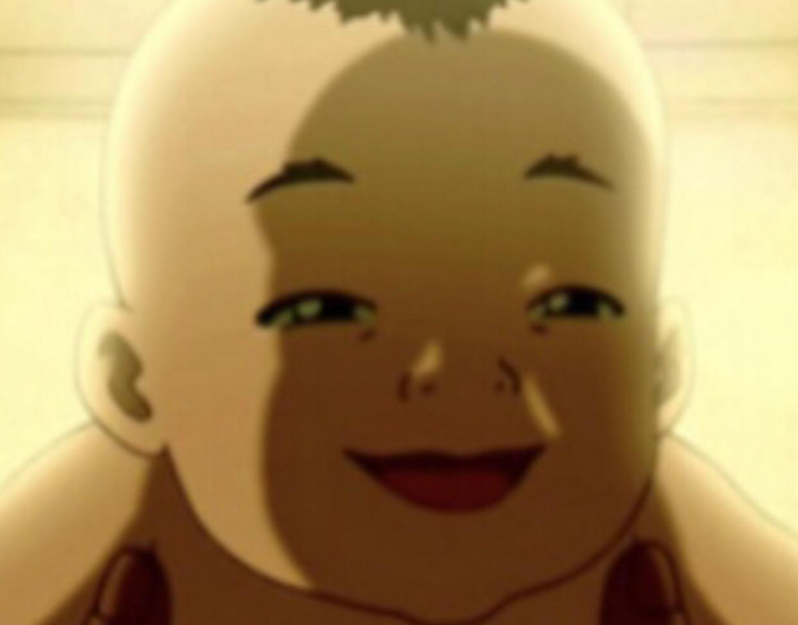

About bending
Water
Water bending came from the ocean spirits. Water benders learned their bending from the moon. The moon is a water benders sorce of power. From water bending you can earn different types of bending. Such as: blood bending (being abble to reach the water someone elses body.) it is the abbility to control water. Water is the element of change. Water bending is used by the people of the Water Tribe. The people of the water tribe are divided. Their is the Southern Water Tribe. Their is the Northern Water Tribe. Their is then Froggy Swamp Tribe. They were the only benders who did not learn their bending from animals. Water benders fight grace fully. Water benders use their opponents energy against them. The let their defence become their offence. They use their opponents force against them. They turn defense into counter attack. They focus on the control of the opponents attack. Water benders can bend steam.

Earth
Earth is one of the four types of bending. Apparently also came from lion turtles. Is sorce is earth its selt And from earth their are aternate style. Such as:lava bending (lava turns into rock when cooled down). Also metal bending (because metal is just rock purified). Lastly sand bending (bacause sand is just rock in tiny bits). It is the abbitility to control rocks. The first earth benders were Oma and Shu The original benders were badger moles badger moles taught Oma and Shu therefore Oma and shu were the first human earth benders. The key to earth bending is mastering jing. The first jing involves patience. And the second jing involves listening. With those to jing people in avatar earth bend. In fights earth benders act disicively. Bassicaly in a fight they wait for the right moment to attack. In fight ting as an earth bender your fighting reflect on your personality. Earth bender have learnt to adapt to new fighting styles. Earth bending balances offense defense and strength. In earth bending when in a fight they are 85 different opptions in battle.
Fire
Fire i would most prefer because your the sorce of it. And also because in the movie you need it. first of all you can make light ning appear. It is the abitlity to also conltrol fire. It is also the ability given from the lion turles It sorce is the sun. Maker dragons. It is the only element that is generated from you. Iroh was the best fire bender in the history of fire bending. Say one bad thing about him my fist will be in your face i will track you down weather you like it or not i will atack your family. Kid or not your going down good or bad i dont care nyenyeny cry all you want you are going down listen hear kid bring the wip. Fire is the element of power. It uses force to cary out missions. Fire bending represents the energy of life. Did you know that fire benders also draw their fire from commets. They can also draw their bending from fiery core. But when their is a solar eclipse their are power less cause the sun is bloked. The also can draw their power from volcanos. Even lightning. Fire benders use their chi to fight.
Air
After the one hundred year war king sosin (fire nation) launched an attack on the air nommads because he new the next avatar Would be a air nomad so he wanted to attack this. It is one of the four bendings. It is the abbility to control air Sorce air. This abbility was learned from the sky byson. The sky byson was the first Air bender. This abbility was give by the lion turtle. Air is the element of freedom. They ditach them selves from worldly problem and their for finding peace and freedom. The key to air bending is flexibility. They try use their opponents energy against them in fights but fail instead they use up the opponents energy up and strike. They have tattoos that tell the opponent if the air bender has moved a high level of understanding of airbending or not. the air scooter is an move invented by aang. what they air scooter does is it is a form of tranportation it is a 3d ball that moves while you stand on it.
